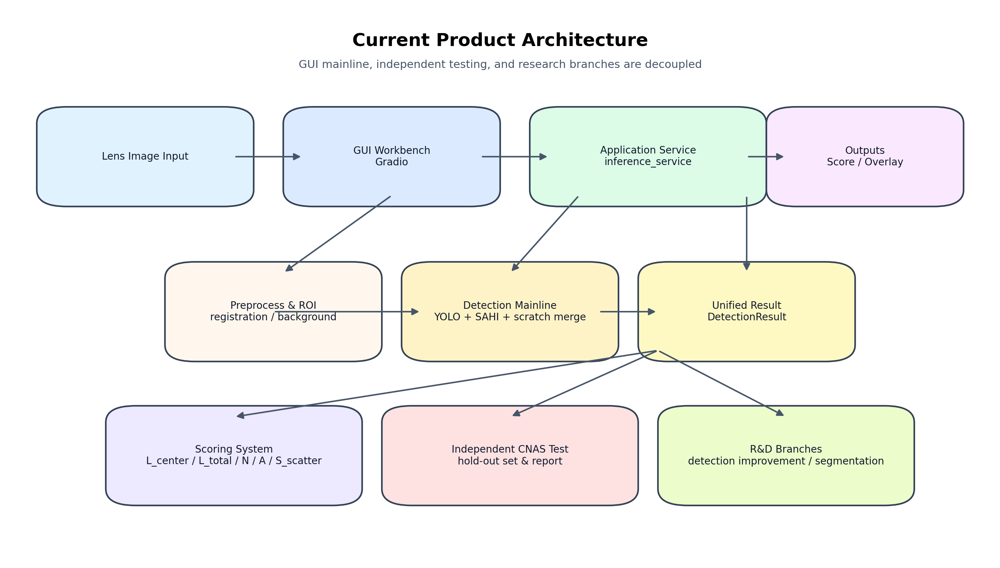
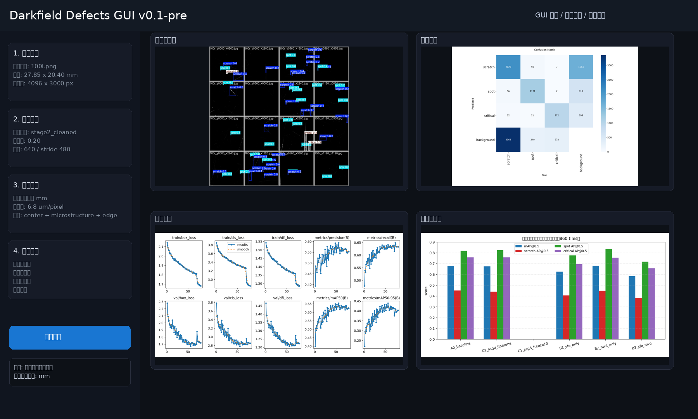
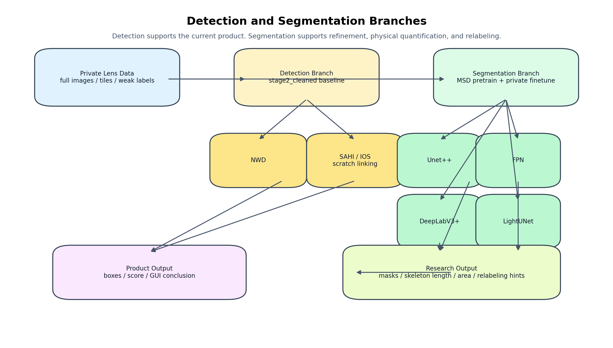
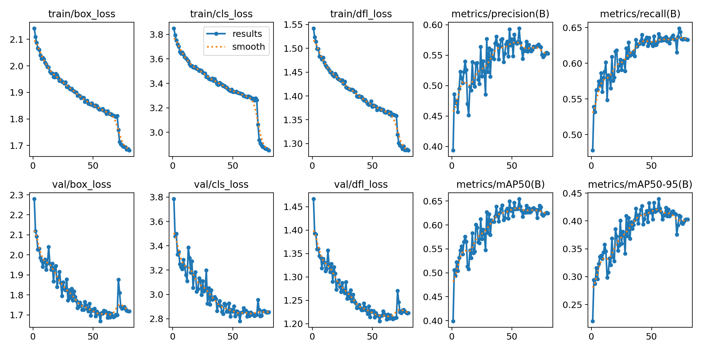
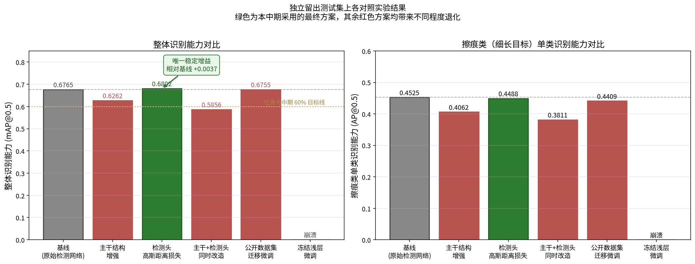
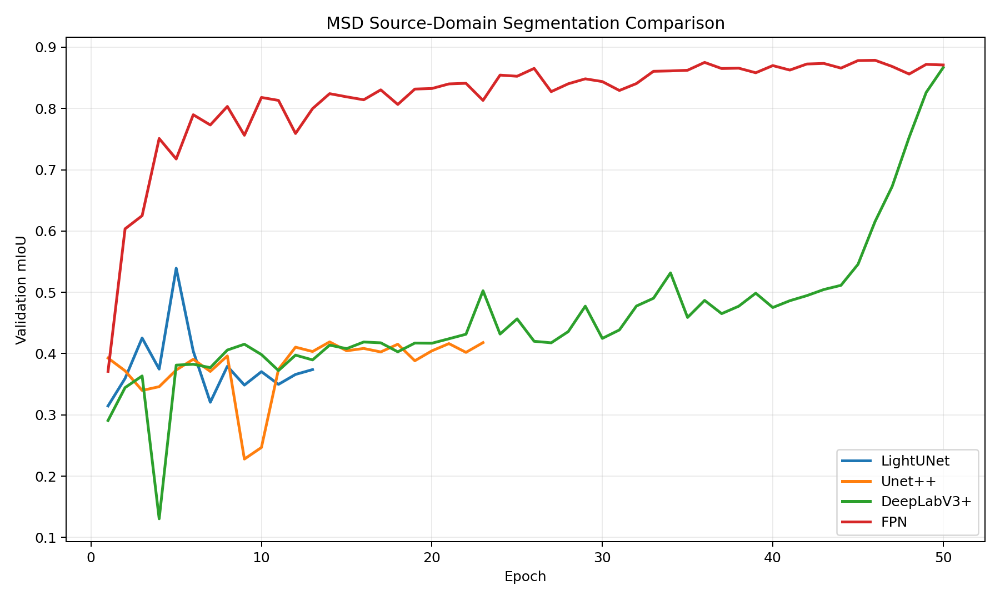
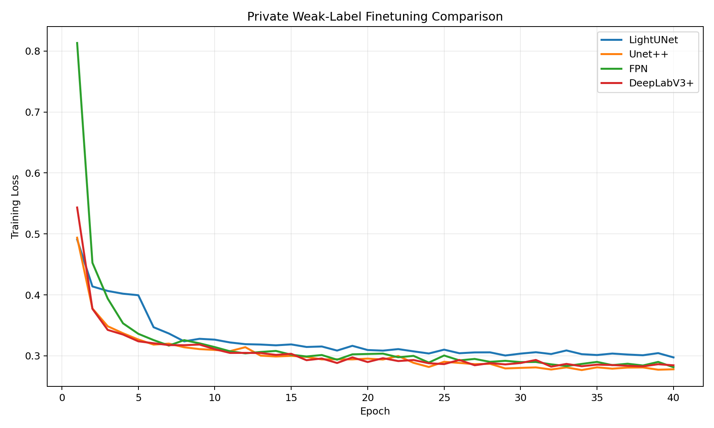
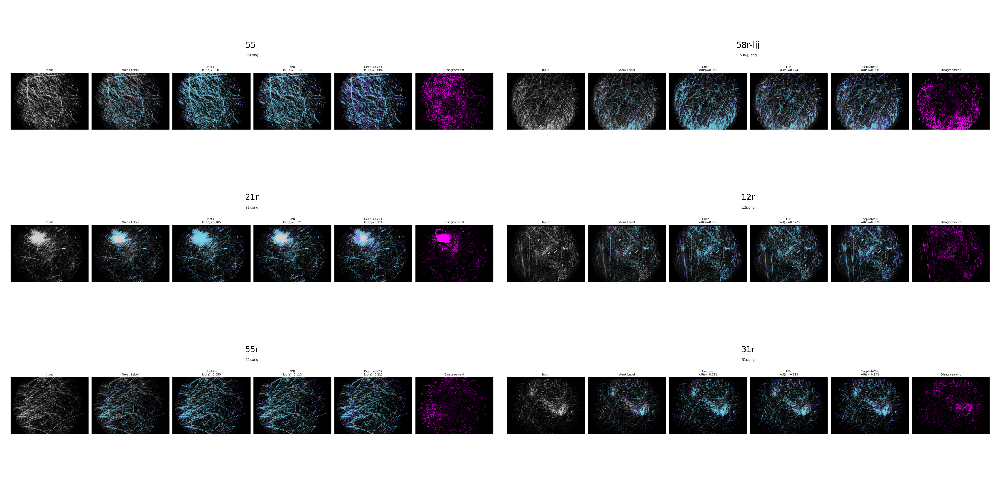
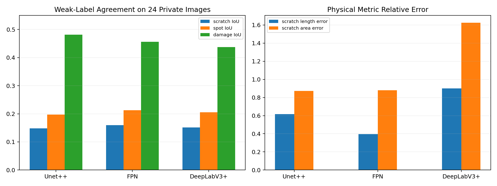
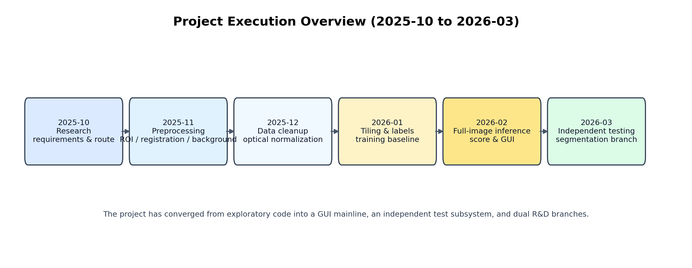

本次整理的目标，是在当前项目已有文档基础上形成一份可以直接交付和阅读的综合性 Word 文档，统一回答以下问题：
在本次整理前，仓库中已经存在两份主要文档来源：
这两份文档原本已经包含一定插图，例如 GUI 界面示意、ROI 参考图、训练曲线和识别算法对比图，因此不能算“纯文字文档”。但从交付视角看，仍存在三类图片不足：
因此，本次在保留原有图表基础上，新增了系统架构图、算法双分支结构图和执行阶段总览图，并补入最新的分割实验图表，以形成更完整的图文说明。
截至 2026 年 3 月末，项目已经从“研究代码集合”逐步收敛为三条清晰且相互解耦的主线：
也就是说，当前项目已经具备 v0.1-pre 级别的预发布条件，适合做阶段汇报、交接和后续研发承接。

当前正式系统以 GUI 为准，其面向普通用户的主流程只有四步：
训练脚本、研究实验脚本、分割对照试验和独立测试脚本都不属于普通用户入口。
从代码结构上看，当前系统已经形成比较稳定的分层关系：
src/darkfield_defects/viz/app.py：GUI 操作员工作台。src/darkfield_defects/app_services/inference_service.py：正式主线的全图推理服务。src/darkfield_defects/scoring/：统一评分、报告与物理量化逻辑。cnas_test/：独立测试子系统。scripts/ 与 research_loops/：实验与研发规则。相比前期阶段，目前最大的进步不是单个模型分数的变化，而是“产品主线、测试链路和研究分支已经拆清楚”。

识别主线当前仍以 stage2_cleaned 作为正式基线，通过整图切片、SAHI 滑窗、IOS NMS 和 connect_scratches 划痕链合并完成全图推理。该路线的优势是工程成熟度高、已通过固定留出集验证、且已经和 GUI 主线对齐。
分割分支不是立即替代正式检测主线，而是为以下问题建立更贴近物理本质的表达：
因此，当前更合理的技术判断是：识别主线负责正式产品，分割分支负责精修、量化和标注更新辅助。

当前系统已经把比例尺 6.8 um/pixel 纳入统一配置，对外默认使用 mm 和 mm²。这一改造的意义在于，评分体系可以逐步从“像素值统计”过渡到“物理尺寸与功能区权重”的统一逻辑。
评分主指标已经收敛为：
L_center：中心区关键划痕长度。L_total：区域加权后的总体划痕长度。N：区域加权缺陷数量。A：区域加权缺陷面积。S_scatter：区域加权散射强度。这使当前评分不再只是视觉上的“看起来多还是少”，而逐步转向“中心区和微结构关键区受损程度”的物理表达。
当前正式识别主线的对比结果如下表所示。
| 实验 | mAP@0.5 | mAP@0.5:0.95 | Precision | Recall | Scratch AP@0.5 | Spot AP@0.5 | Critical AP@0.5 |
|---|---|---|---|---|---|---|---|
| A0_baseline | 0.6765 | 0.4541 | 0.5997 | 0.6735 | 0.4525 | 0.8180 | 0.7589 |
| C1_ssgd_finetune | 0.6755 | 0.4353 | 0.5875 | 0.6716 | 0.4409 | 0.8266 | 0.7591 |
| C1_ssgd_freeze10 | 0.0000 | 0.0000 | 0.0000 | 0.0000 | 0.0000 | 0.0000 | 0.0000 |
| B1_sfe_only | 0.6262 | 0.4020 | 0.5575 | 0.6347 | 0.4062 | 0.7767 | 0.6956 |
| B2_nwd_only | 0.6802 | 0.4500 | 0.6080 | 0.6641 | 0.4488 | 0.8377 | 0.7542 |
| B3_sfe_nwd | 0.5856 | 0.3603 | 0.5246 | 0.6225 | 0.3811 | 0.7174 | 0.6581 |


当前最稳的判断是：
stage2_cleaned 仍然是正式系统的稳定主线。NWD-only 是当前唯一值得继续观察的结构改进。分割分支已经从“是否能跑通”进入“结构对照和人工核查”的正式研发阶段。
| 模型 | 运行轮数 | 最佳 Epoch | 最佳 val_mIoU | scratch IoU | spot IoU | quick mIoU |
|---|---|---|---|---|---|---|
| LightUNet | 13 | 5 | 0.5393 | 0.3837 | 0.5855 | 0.3231 |
| Unet++ | 23 | 14 | 0.4191 | 0.6632 | 0.8404 | 0.5012 |
| DeepLabV3+ | 50 | 50 | 0.8669 | 0.8174 | 0.8827 | 0.8501 |
| FPN | 50 | 46 | 0.8787 | 0.8201 | 0.8907 | 0.8554 |

| 模型 | 运行轮数 | 最佳 Epoch | 最佳 loss | 最终 loss |
|---|---|---|---|---|
| LightUNet | 40 | 40 | 0.2974 | 0.2974 |
| Unet++ | 40 | 34 | 0.2766 | 0.2779 |
| FPN | 40 | 40 | 0.2813 | 0.2813 |
| DeepLabV3+ | 40 | 32 | 0.2822 | 0.2844 |

从 197 张私有弱标签图像中选取了 24 张代表样本，并将 Unet++、FPN 和 DeepLabV3+ 的结果并列展示。当前综合判断是：


| 模型 | scratch IoU | scratch Dice | spot IoU | damage IoU | pixel accuracy | consensus ratio | scratch length error | scratch area error |
|---|---|---|---|---|---|---|---|---|
| Unet++ | 0.1479 | 0.2541 | 0.1969 | 0.4818 | 0.9382 | 0.9433 | 0.6160 | 0.8721 |
| FPN | 0.1593 | 0.2721 | 0.2126 | 0.4562 | 0.9396 | 0.9433 | 0.3954 | 0.8790 |
| DeepLabV3+ | 0.1514 | 0.2606 | 0.2053 | 0.4375 | 0.9272 | 0.9433 | 0.9013 | 1.6245 |
当前项目已经把测试逻辑从研发主线中拆开。独立 CNAS 子系统、固定留出集和正式评测口径不再参与日常模型调参。这样做的好处是：
从 2025 年 10 月到 2026 年 3 月，项目可以划分为六个月的连续收敛过程：从技术调研与预处理打底，逐步进入数据建设、基线训练、全图推理、GUI 收口、测试独立和分割研发线启动。

| 阶段 | 时间 | 主题 | 主要输出 |
|---|---|---|---|
| Phase 0 | 2025-10 ~ 2025-11 | 需求澄清与技术路线确定 | 调研、方案比较、原型方向 |
| Phase 1 | 2025-11 ~ 2026-01 | 预处理流水线与图像标准化 | ROI、配准、背景扣除、光学口径 |
| Phase 2 | 2026-01 ~ 2026-02 | 切片标注、训练基线、推理修正 | stage2_cleaned 基线、全图推理链路 |
| Phase 3 | 2026-02 ~ 2026-03 | GUI 收敛、评分统一、测试独立、分割准备 | GUI 预发布、CNAS 子系统、分割实验起步 |
从执行视角看，过去六个月最重要的成果不是“跑了多少个模型”，而是：
| 文档 | 是否已存在 | 原有图片情况 | 本次补充内容 | 结论 |
|---|---|---|---|---|
| 研究技术文档 | 是 | 已有 GUI 示意、训练曲线、识别对比图 | 补充系统架构图、算法双分支图、分割实验图 | 现在已具备较完整图文结构 |
| 项目执行文档 | 是 | 已有 ROI 图、训练曲线、GUI 示意 | 补充阶段总览图，并在综合文档中统一归并 | 现在可用于汇报和交接 |
NWD-only 为父实验推进，保持单变量实验纪律。FPN + Unet++ 为主候选，一条侧重标注更新，一条侧重物理量化与评分耦合。L_center / L_total / N / A / S_scatter 建立更可解释的评分理论。本项目当前已经具备“可展示、可交接、可继续研发”的综合条件。原有技术开发文档和执行过程文档已经存在，但配图仍偏向结果展示。本次新增的系统架构图、算法结构图和执行阶段图，已经把“系统是什么、算法如何分层、项目如何收敛”三个关键问题补齐，能够更好地支撑项目汇报、团队协作和后续接手。
附注：本综合文档以仓库中的现有技术文档、执行文档、实验日志、系统源码结构和最新分割实验产物为基础整理而成，并已补入新的解释型配图。